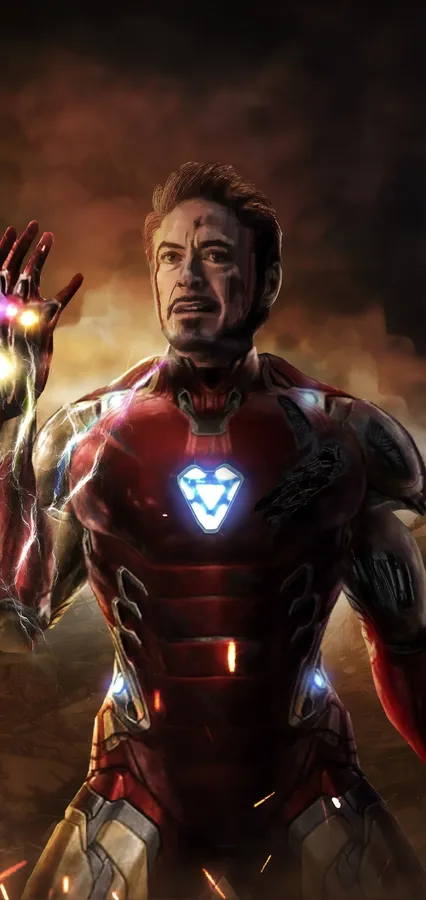

Played by: Robert Downey Jr.
First appearance: “Iron Man” (2008)
Most recent appearance: “Avengers: Endgame” (2019)
In one of the great alchemies of character and actor, Downey brings an irresistible fusion of charm, humor, hubris and intelligence to Stark, and transformed Iron Man from one of Marvel’s second-tier superheroes — Batman with more gadgets and less trauma — into the fulcrum point of the entire MCU. Yes, Stark can be the architect of his own misfortune, but those deeply human flaws only make his triumphs (up to and including sacrificing his life to defeat Thanos) that much more resonant and satisfying. In fact, Downey’s performance is so singular that it feels impossible to imagine anyone else in the role; more than his tech, wealth and brains, Downey is Stark’s superpower.
Played by: Tom Holland
First appearance: “Captain America: Civil War” (2016)
Most recent appearance: “Spider-Man: No Way Home” (2021)
Everyone has a favorite Spider-Man, but if one is measuring only by screen time (three solo movies and three team-up films), then Holland takes the crown. The actor’s background in gymnastics and ballet has made him the most acrobatic Spidey, lending some serious credibility to his web-slinging performance. He can backflip, throw out hilarious zingers and his on-screen chemistry with Zendaya’s MJ has made the two a real-life Hollywood power couple. “No Way Home’s” tragic Aunt May scene also proved he has the dramatic chops to make Spidey fans reach for some tissues.
Played by: Benedict Cumberbatch
First appearance:: “Doctor Strange” (2016)
Most recent appearance: “Doctor Strange in the Multiverse of Madness” (2022)
By the Hoary Hosts of Hoggoth, mystical magic and odd incantations have never looked quite this good in a superhero movie. Cumberbatch gives the Sorcerer Supreme a level of depth, arrogance and personal growth over his two movies that set him apart from the classic do-gooder hero. Plus, he makes the wavy, spellcasting hand motions look cool.
Played by: Chris Evans
First appearance::“Captain America: The First Avenger” (2011)
Most recent appearance:“Avengers: Endgame” (2019) “Avengers: Endgame” (2019)
There are almost too many iconic Captain America lines to choose from: “On your left,” “I can do this all day,” “I’m with you ‘till the end of the line,” “America’s ass” — but “just a kid from Brooklyn” may describe Evans’ character the best. Scrawny Steve Rogers just wanted to help his country however he could, even if that meant enrolling in an experimental Super Soldier program. Anyone can have muscles and throw a shield, but it’s what’s on the inside that makes you a hero. Steve’s desire to always do the right thing and help people – like when he jumps on what he thinks is a live grenade without hesitation in the first “Captain America” – speaks louder than any superpower. What could’ve been just a do-gooder, Boy Scout role became one of the MCU’s most adored characters thanks to Evans.